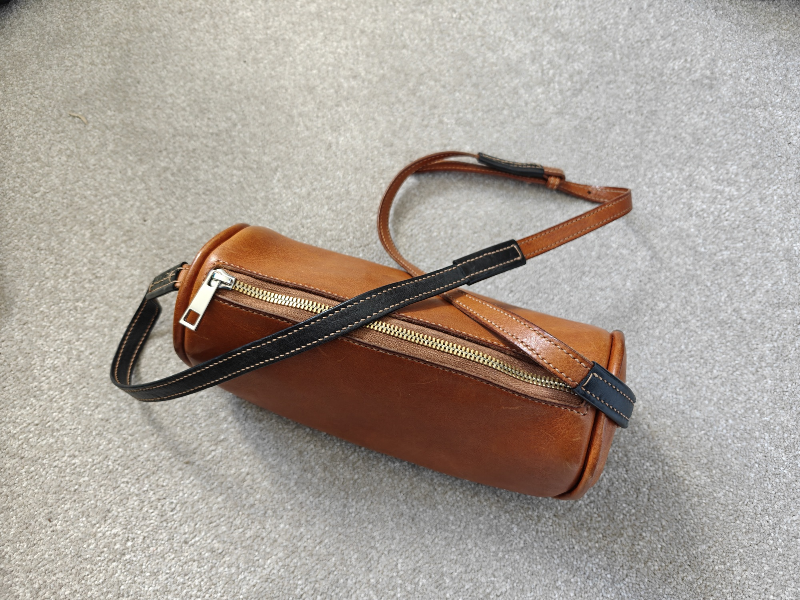
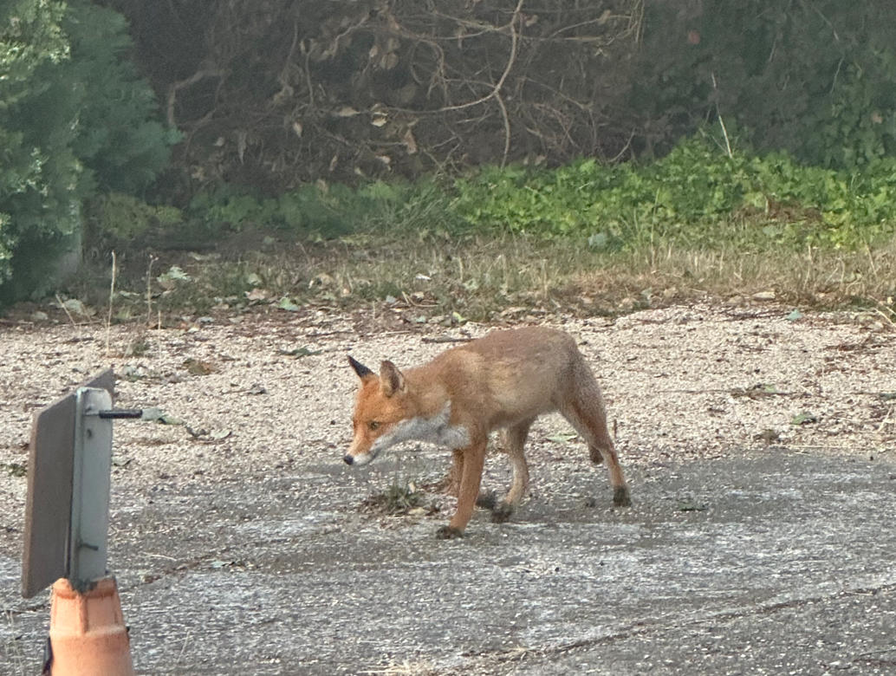
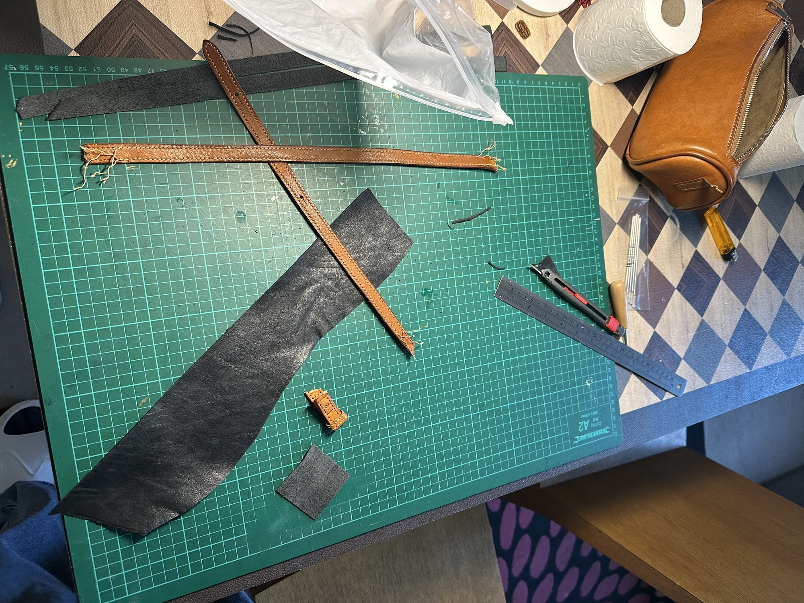
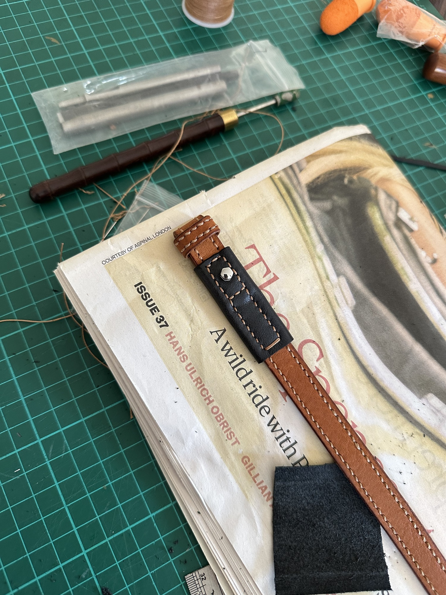

Living Practice · 02
A Fox, a Bag,
and a Repair
When a non-human actor enters the life of an object.
A hand-stitched leather bag, a fox that took it in the night, and a repair that became the most interesting seam.

The making — and the taking
I had made a leather crossbody bag by hand for my partner — saddle-stitched, hand-burnished, shaped across many evenings. One morning, a fox came into our garden and took it. When I found the bag, the shoulder strap had been partially eaten through.


The repair
I repaired it. I cut a new strap from black leather, stitched it to the original tan, and riveted the join. The bag now carries a visible record of this encounter — a seam where two leathers meet, a small interruption in the original design that is also its most interesting detail.
"Repair as a design act, rather than an afterthought."
— Research directionWhy it matters
This experience sits at the heart of what I want to research: how non-human actors change the trajectory of designed objects, and what happens when repair becomes a design act rather than an afterthought.


